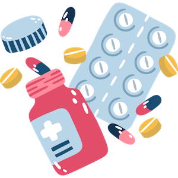

Поддержка зрения для программистов
Знаете одну из главных причин падения зрения ?Голубой свет наших телефонов - макулярная дегенерация,поэтому ловите препараты для поддержки макулы:
- Лютеин 15мг в день
- Зеаксантин 5 мг в день
- Астаксантин 6 мг в день
- Метилфолат 1000 мг в день
- В6 100мг в день
- Липосомальный Витамин С 450-1000 мг в день
- Метилкобаламин 2-4 мг в день
- Селен 200мкгр в день
- Омега 3 только с высоким содержанием DHA кислоты ,ее должно быть больше чем EPA
- R-липоевая кислота 400 мг в день
Поддержка мозга для программиста
Первый шаг -расшевелить НЕЙРОТРОФИНЫ (это факторы роста для поддержки нейронов)
- Lкарнитин 1000мг 2 раза в день
- Лития Оротат 10 мг 1 раз в день
- экстракт плодов кофе -2 раза в день
А теперь повысим способность фокусировки и для этого нам понадобится:
- пантотеновая кислота 200 мг в день
- готу кола 500мг в день
- PQQ 20мг в день
- таурин 1000мг в день
- бакопа 250 мг в день
- бенфотиамин 300мг 2 раза в день
- бенфотиамин 300мг 2 раза в день
И все это дело сопровождаем Треонатом Магния в дозировке 800 мг в день,именно эта форма магния усилит процесс апгрейда).Примерный курс -два месяца,ввод по одной добавке раз в три дня и отслеживание изменений в организме.